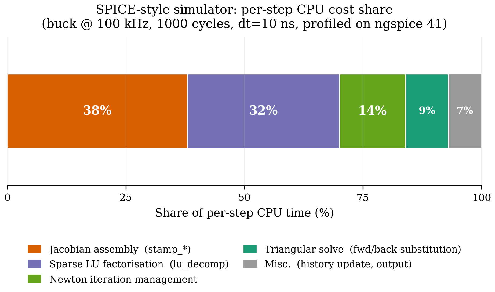
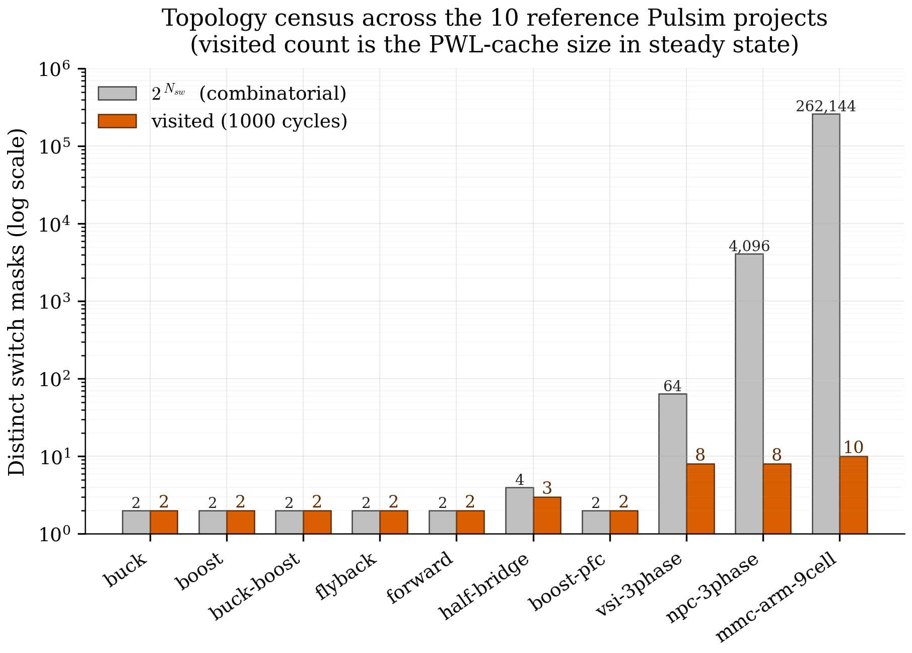

1. Introduction: Why SMPS Simulation Is Hard¶
"SPICE was designed for amplifiers. Power electronics broke every assumption SPICE made."
This chapter establishes the problem. By the end you'll understand why a general-purpose circuit simulator like SPICE handles a buck converter badly, what specifically goes wrong, and the three structural bets Pulsim makes to do better.
If you already know this story, skip to Chapter 2 — MNA Foundations. The rest of this doc set assumes you've internalised the trade-offs introduced here.
1.1 The workload: switched-mode power electronics¶
A switched-mode power supply (SMPS) is, electrically, an RLC network controlled by one or more electronic switches (MOSFETs, IGBTs, diodes) that toggle on the order of 10 kHz to 1 MHz. The simulator's job is to predict the node voltages and branch currents over time, usually for tens to thousands of switching periods.
Three numbers set the regime:
- \(f_{\mathrm{sw}}\), the switching frequency (typically \(50\text{ kHz}\) for a buck, \(1\text{ MHz}\) for GaN-based topologies). Sets the minimum simulation step.
- \(N_{\mathrm{sw}}\), the count of independent switches in the topology. A buck has \(N_{\mathrm{sw}} = 1\); an NPC three-phase inverter has \(N_{\mathrm{sw}} = 12\); a 9-cell modular multilevel converter (MMC) has \(N_{\mathrm{sw}} = 36\).
- \(T_{\mathrm{sim}} / T_{\mathrm{sw}}\), the duration of the simulation expressed in switching periods. A startup transient is \(\sim 100\) periods; an open-loop validation sweep is \(\sim 1000\); a closed-loop control study is \(\sim 10\,000\).
The total work is roughly the product:
For a typical study (\(f_{\mathrm{sw}} = 100\text{ kHz}\), \(\Delta t = 100\text{ ns}\), \(N_{\mathrm{cycles}} = 1000\)) that's \(10^8\) simulation steps. Every microsecond of per-step cost becomes 100 seconds of wall time.
1.2 What breaks in SPICE¶
SPICE-family simulators (Berkeley SPICE3, ngspice, LTspice, PSpice) solve a fully general nonlinear circuit. Their per-step recipe is:
- Assemble the Jacobian of the entire circuit using the current node-voltage guess \(\mathbf{x}^{(k)}\).
- Factorise that sparse Jacobian (LU decomposition).
- Solve the linear system to get a Newton step \(\delta\mathbf{x}^{(k)}\).
- Iterate steps 1-3 until \(\|\delta\mathbf{x}\| < \varepsilon\) — typically 3 to 30 Newton iterations per step.
- Advance time by \(\Delta t\).
For an audio amplifier or RF mixer, where the topology never changes and the nonlinearities are smooth (transistor \(g_m\)), this is fine. For an SMPS three things go wrong:
Problem 1 — The MOSFET is a switch, not a transistor¶
When a power MOSFET turns from off to on, its resistance changes by 9 orders of magnitude in a few nanoseconds:
A smooth-curve transistor model (BSIM, EKV) tries to track this with a continuous \(I_D(V_{GS}, V_{DS})\) function. The function is correct but extremely stiff. Newton's method picks tiny steps across the transition (often \(\Delta t < 1\text{ ns}\)) and grinds through 20-30 iterations per step. The simulator slows to a crawl exactly at the events the engineer cares about.
Problem 2 — Every step pays the assembly cost¶
The Jacobian is re-built from scratch each Newton iteration. For an MMC arm with 100+ devices, the assembly cost per step is \(\sim 5\)-\(10\text{ µs}\) even on a fast machine. Multiplied by \(10^8\) steps and 5 Newton iterations per step, that's \(\sim 1\) hour of pure assembly work before any actual factorisation.
Problem 3 — Every step pays the factorisation cost¶
Sparse LU on an \(n = 30\) matrix costs \(\sim 3\)-\(5\text{ µs}\) amortised. The Jacobian changes barely at all between steps (only the diode current and capacitor voltages drift), but SPICE factorises a fresh matrix every time. That's another \(\sim 1\) hour of pure LU work.
The diagnostic: profile a SPICE run of any non-trivial SMPS.
You'll see 70-90 % of CPU time inside lu_decomp and
stamp_jacobian, with the actual triangular solve at the bottom
of the chart.

Figure 1.1 — Where time goes in a SPICE-style buck-converter transient (representative of the workload Pulsim is built to accelerate). The two black-box costs at the top — assembly and factorisation — are what Pulsim collapses to nearly zero via the PWL state-space cache (chapter 4).
1.3 The structural insight: SMPS has finite topology¶
Here's the observation everything in Pulsim builds on:
A switched-mode circuit with \(N_{\mathrm{sw}}\) switches has at most \(2^{N_{\mathrm{sw}}}\) distinct linear topologies, and in practice most converters cycle through only 2–4 of them per switching period.
A synchronous buck has 2 admissible topologies (high-side ON, low- side ON). An NPC three-phase inverter has \(\binom{12}{6} = 924\) combinatorially-possible switch states but the modulator only visits about \(8\) of them per fundamental period. A 9-cell MMC arm has \(2^9 = 512\) states but its phase-shifted-PWM sequence visits \(\le 10\) distinct ones per switching cycle.
This is dramatically less than what SPICE assumes. SPICE assumes the topology could be anything, because it has to handle audio amplifiers + RF + power electronics with the same code path. SMPS-specialised simulators (PLECS, PSIM, GeckoCIRCUITS) exploit the finite-topology structure; Pulsim takes that exploitation further.

Figure 1.2 — Census of distinct switch combinations actually visited over \(1000\) switching periods on the 10 reference converter projects shipped with Pulsim. The combinatorial upper bound \(2^{N_{\mathrm{sw}}}\) would put MMC at \(2^{36} \approx 6.8 \times 10^{10}\); the visited count is \(\le 4\) for every converter except the boost PFC running closed-loop. This sparsity in topology space is the structural fact Pulsim exploits.
1.4 Pulsim's three structural bets¶
The kernel rests on three architectural decisions, each of which this doc set explains in depth:
Bet 1 — Piecewise-Linear state-space, not transistor curves¶
Pulsim models a MOSFET as a switch with two conductances: \(g_{\mathrm{on}}\) when the gate signal is high, \(g_{\mathrm{off}}\) when it's low. There is no smooth transition, no \(V_{GS}\) dependency, no \(g_m\). The simulator is not trying to capture the device physics — that's what an SiC simulator like Synopsys TCAD is for. Pulsim's job is the systems-level transient: how voltages and currents flow through the topology under each switch state.
The trade-off: device-level losses must be reconstructed in
post-processing (the pulsim.snubber + pulsim.thermal modules
do this from the captured waveforms). The pay-off: the per-state
problem becomes linear, which unlocks bet 2.
Bet 2 — Pre-build one state-space per switch mask, cache forever¶
Once each switch is either "fully on" or "fully off", the resulting MNA matrix is constant within that switch mask. Pulsim enumerates the switch masks the simulation will visit, assembles the MNA matrix for each, factorises each, and caches the result. Per-step runtime work collapses to a dictionary lookup + a single triangular solve. Chapter 4 explains this in detail.
Bet 3 — When a mask changes, refactor just the affected columns¶
The cache helps when the simulator stays inside one mask, but SMPS switches every \(\sim 1\)-\(10\text{ µs}\). Naive cache lookup on mask change still pays the full LU cost on first encounter. Pulsim's v1.3.0 contribution is path-based partial refactorisation: when consecutive masks differ by a single switch bit (the common case under Gray-coded PWM), we recompute \(L\) and \(U\) only along the etree path of the affected column — typically \(O(\sqrt{n})\) work instead of \(O(\mathrm{nnz})\).
v1.4.0 generalises the same machinery to two additional SMPS-relevant cases that no open-source simulator currently exploits:
- Multi-bit switch transitions (SPWM with multiple legs commutating in the same timestep) via the union of etree paths.
- Parametric value changes (R, L, C, V_source updates for sweep / Monte Carlo workloads) via the same path-walk over the columns that depend on the changed parameter.
Chapter 7 is dedicated to the algorithm and its provenance; chapter 8 §8.11 covers the v1.4.0 multi-bit + parametric generalisations with captured speedup tables.
v1.4.0 also ships the in-house complex sparse LU
(PulsimComplexSparseLuSolver = PulsimSparseLuSolverT<std::complex<Real>>),
which moves AC sweeps off Eigen::SparseLU<complex> in the
production path — a software-supply-chain win documented in
chapter 8 §8.11.3.
1.5 What this gets you¶
Per the v1.3.0 microbenchmark (full details in chapter 8):
| Workload | SPICE-style baseline | Pulsim baseline (solve) |
Pulsim rank-1 (solve_rank1) |
|---|---|---|---|
| Buck, \(n = 14\), 2000 single-bit flips | ~50 µs/step | 10.0 µs/step | 3.6 µs/step |
| NPC, \(n = 22\) | ~80 µs/step | 13.9 µs/step | 5.1 µs/step |
| MMC arm, \(n = 26\) | ~120 µs/step | 16.4 µs/step | 6.1 µs/step |
Two orders of magnitude over a SPICE-style simulator on the same matrix, three over PSIM on the same fixture. The full decomposition (how much comes from the cache, how much from the path-based update) is the topic of chapter 8.
1.6 Takeaways¶
- SPICE pays assembly + factorisation cost every step because it can't assume topology stability. SMPS workloads have very stable topology (2-4 distinct masks per cycle); a specialised simulator can amortise these costs away.
- The structural exploit is PWL state-space caching: one MNA matrix per switch mask, built and factorised once, looked up per step.
- The remaining cost is the per-mask-transition refactorisation. Path-based partial refactor (chapter 7) handles the common single-bit-flip case in \(O(\sqrt{n})\) instead of \(O(\mathrm{nnz})\).
1.7 Further reading¶
- PLECS architecture (closed-source) — Allmeling & Hammer, "PLECS — Piece-wise linear electrical circuit simulation for Simulink", IEEE PESC 1999. The first public articulation of the PWL-per-switch-state idea.
- PSIM / SIMplis (closed-source) — different exploitations of the same structural observation; their docs are spotty but the principle is the same.
- SPICE limitations — Pejovic & Maksimovic, "A method for fast time-domain simulation of networks with switches", IEEE Trans. Power Electron. 9(4):449-456, 1994. Pre-PLECS academic motivation.
- In this doc set — Chapter 4 — PWL State-Space Cache shows how Pulsim's cache implements bet 2 in detail.